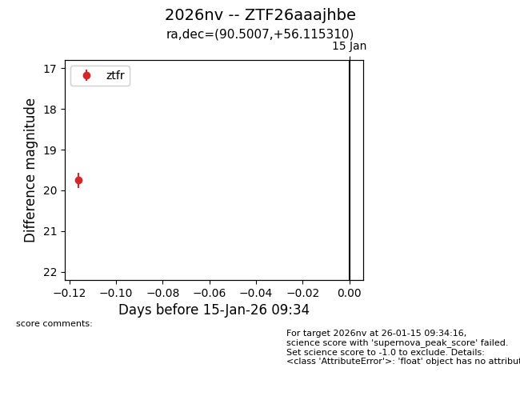
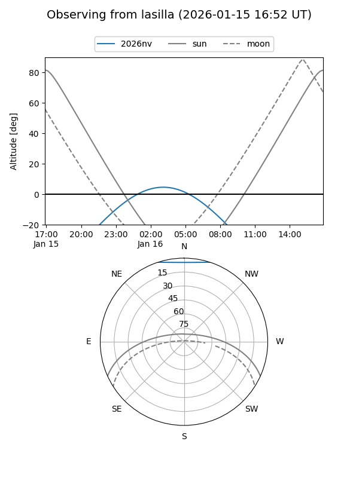

2026nv
Target 2026nv at 2026-01-15 09:35
Aliases and brokers:
FINK: link
Lasair: link
ALeRCE: link
TNS: link
YSE: link
alt names
ZTF26aaajhbe (ztf,fink_ztf)
2026nv (tns,yse)
Coordinates:
equatorial (ra, dec) = 90.5007,+56.11531
equatorial (HMS+DMS) = 06:02:00.17,+56:06:55.11
galactic (l, b) = (157.4035,+15.80353)
Flags:
Photometry:
last ztfr=19.75
1 ztfr detections
Lightcurve

Visibility


Additional plots